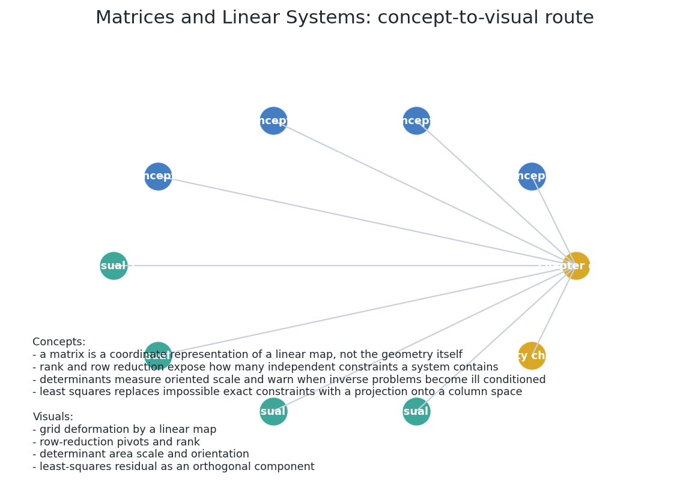
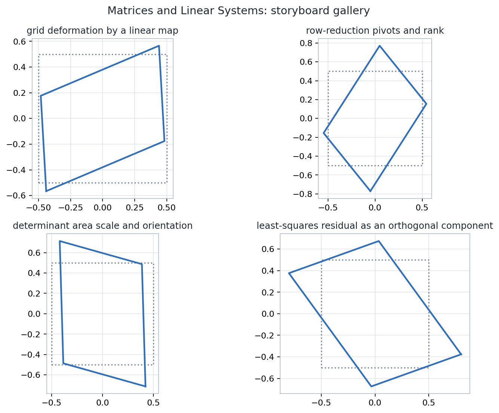
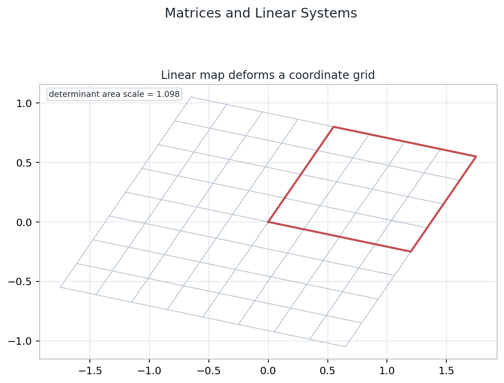
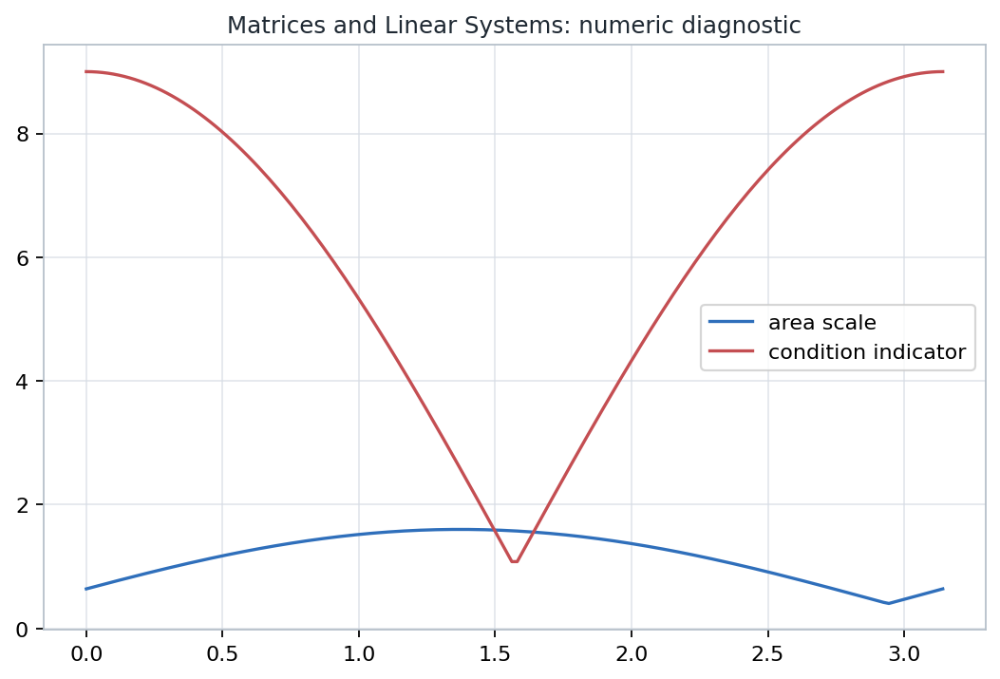

Linear algebra as an inspectable graphics toolkit: maps, constraints, rank, determinants, Euclidean measurements, and least-squares fitting.
Source span: printed pages 9-62; PDF pages 56-109.
Notebook: Geometric-Tools-for-Computer-Graphics/part-01-foundations/chapter-02-matrices-and-linear-systems/02-matrices-and-linear-systems.ipynb
The point is unchanged; only its coordinate description changes.
The frame is fixed; the map moves the geometry inside it.
The source and target may be different modeled spaces.
| Object | Computational role | Contract |
|---|---|---|
| \(x\in\mathbb{R}^n\) | tuple or coordinate vector | ordered scalar data |
| \(A\in\mathbb{R}^{m\times n}\) | linear measurements or map | accepts \(n\) inputs, returns \(m\) outputs |
| \(A^T\) | dualized measurements | turns rows into columns |
| \(BA\) | composition | apply \(A\) first, then \(B\) |
Full independent information for the unknowns.
Rows ask for incompatible geometry.
Dependent rows leave a family of choices.



